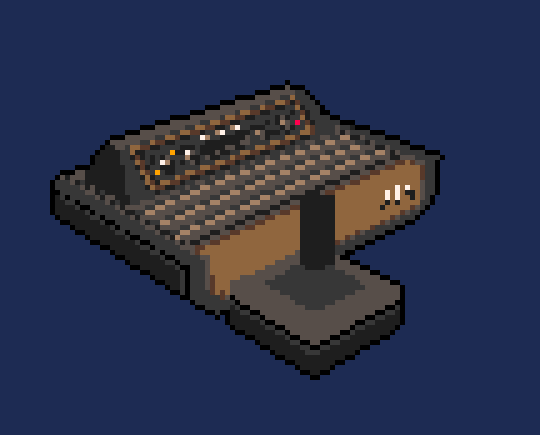

Origen del Pixel Art
El Pixel Art nació en la década de 1970 con el auge de los
primeros videojuegos arcade. Consolas como el Atari 2600 y
computadoras como la Commodore 64 impulsaron la necesidad de crear
gráficos visuales usando pocos colores y resoluciones limitadas.

Auge en los 80s y 90s
Durante los años 80 y 90, el Pixel Art alcanzó su máximo esplendor
con videojuegos como Super Mario Bros, The Legend of Zelda, Mega
Man y Sonic the Hedgehog. Cada personaje, enemigo y escenario era
meticulosamente diseñado pixel por pixel.
Renacimiento moderno
En la actualidad, el Pixel Art ha experimentado un renacimiento
gracias a desarrolladores independientes y la cultura retro.
Juegos como Stardew Valley, Celeste y Hyper Light Drifter muestran
cómo esta técnica sigue vigente, combinando lo clásico con
mecánicas modernas.